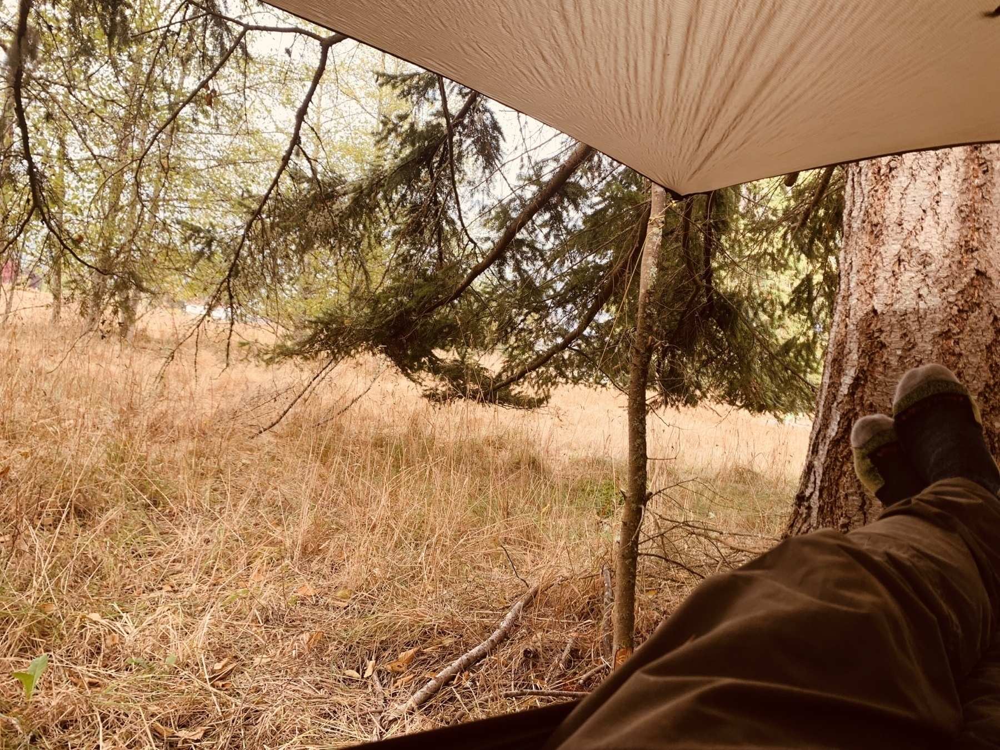

Return to Astro
I’ve returned to some work on the astro side of things as I ran into some wheel-spinning on Sanity, almost all of which is very, very (very) likely to be the limitations of me bluffing my way through React in general and the manipulation of state in reaction in particular. So today I added shelf locations (barebones) to the web component, defined a route for individual books.
The advent of social media, with all its apparent opportunities for self-expression, briefly suggested a debased fulfillment of Hegel’s horizon of autonomy and recognition for everyone. But now, as a constitutive component of twenty-first-century capitalism, the internet’s key functions include the disabling of memory and the absorption of lived temporalities, not ending history but rendering it unreal and incomprehensible. The paralysis of remembrance occurs individually and collectively: we see this in the transience of any “analog artifacts that are digitized: rather than preservation, their fate is oblivion and loss, noted by no one.
Today in “Great Newsletters”: Ann Boyer’s Mirabilary compels me to find a copy of The Red Wheelbarrow:
Currently reading: Liberation Day by George Saunders 📚
How did I not know about @booksongif and their newsletter until today? Unacceptable.
Related: my discovery of feedbin last year, which allowed me to consume twitter feeds in EXACTLY the way (far, far away from the twitter feed itself) has been incredibly beneficial to me.
Currently reading: Liberation Day by George Saunders 📚
We have been waiting and waiting for rain here, and since it was sprinkling all morning I decided to string up a tarp and hammock in the back yard with the notion of opening a new book and scrutinizing my own eyelids for about an hour. Of course this means the rain stops. Of course.

I couldn’t find a book on Open Library today, so I added it myself. Feels good, man.
What I have been working on
I may not have gotten as much done on bookshelves.dev as I wanted to over the summer, but that is because I was busy buying a home, moving (again), hosting plenty of guests, and taking on a LOT of yard and garden work, for starters. So the “time off” from being a full-time parent to a 2-year-old disappeared before I knew it.
What did I do?
- A lot of testing with and evaluation of Git-based and API-based headless CMS integration.
- Made nontrivial improvements to scraping and API handling (not all of that is shipped)
- Cleaned up and expanded shelf and book display via shortcode
- Added micro.blog json import
It was nice to mark some of these as done when updating the project’s readme file just now. It just doesn’t sound like a lot. Again: busy. But also, I had some very helpful and exciting conversations with some people interested in this project, and in offering me opportunities related to that.
Good things that will happen if I can just keep carving out some time to work on this. Putting some fun tasks at the top of the project’s feature backlog got me excited for upcoming work. However, I am also mindful that one of the rationales for this whole endeavor is to help me read more, so I hope to use the system a bit more regularly as well. I have ideas on that front as well.
New book added to bookshelves.dev
I added this book to my Books I have enjoyed in 2022 shelf today: The English Understand Wool (Storybook ND Series) by Helen DeWitt 📚. I had almost as much fun writing this review as reading the book.
Making the library.json file more useful
I’ve had something sitting on the todo list for a long time: make the library.json file that bookshelves.dev a bit better by providing a full image path to the locally cached cover image for each book, as opposed to just dumping the source url for the image.
The site’s library.json output is generated by a nunjucks template page, which loops through all the books identified on the site and displays each one using the “book” shortcode, which can take an ISBN and optionally a layout. Here, we pass the JSON layout.
---
permalink: '/library.json'
---
{
"name": "{{ site.title }}",
"url": "{{ site.url }}",
"bio": "{{ site.description }}",
"lists": [
{%- for item in booksOnShelves.shelves %}
{
"title": "{{ item.shelfTitle }}",
"shelfID": "{{ item.shelfID }}",
"url": "{{ site.url }}/{{ item.shelfID }}",
"books": [
{%- for ISBN in item.shelfItems %}
{
{% book ISBN, 'json' %}
}{% if not loop.last %},{% endif %}
{%- endfor %}
]
}{% if not loop.last %},{% endif %}
{%- endfor %}
]
}
That book shortcode script passes some details to the layout to, and what it was passing was the path to the source of the image. This could be a local image or (more likely) a URL to an image on Amazon, identified by the build script using the ISBN. But on the site we don’t just use that URL, we use the image plugin to fetch, cache and create responsive markup for that image. That image plugin code is in a different script, so I modified that to return not just that resource, but also the path to the cached image.
const html = `<picture>
${Object.values(metadata)
.map((imageFormat) => {
return ` <source type="${
imageFormat[0].sourceType
}" srcset="${imageFormat
.map((entry) => entry.srcset)
.join(", ")}" sizes="${sizes}">`;
})
.join("\n")}
<img
src="${lowsrc.url}"
alt="${alt}"
class="${cls}"
loading="lazy"
decoding="async">
</picture>`;
return { html, highsrc, lowsrc };
After updating the cacheImage script, I updated all references to it. Now, when build the site, the library.json should have absolute paths to my cached resource, and not the scraped URL of the image I used.
Along the way I noticed that shareLibrary.njk was using the booksOnShelves.json directly, and not filtering out anything whose visibility is not set to “true”. I could have either filtered that in the nunjucks conditional on that generating page, or refactored it to use the booksOnShelf collection in eleventy, where the “hidden” books have already been filtered out. For now, I’ve done the former, which is easier. But I’m not sure where I would land if I thought about that a bit more deeply.
Anyway, this was satisfyingly straightforward. May it serve as a reminder that doing the less exciting items on the todo list can feel really good. Sometimes I only want to work on the daunting new epics and deny myself the pleasure of shipping even a small piece of code.
Adding a blog feed
I added blog posts to the bookshelves.dev site, imported from my micro.blog. The idea is that I will start using this to document bits of work that I’m able to finish, or to talk about what is blocking me.
I’m not sure why I like the idea of using the micro.blog front end, other than it feels indiewebby and dead simple. And it was sure simple to find the automatically generated public json feed. It was almost as simple to import the data from that feed into 11ty as global data.
Because I theoretically might use this platform for posts that don’t have anything to do with the bookshelves.dev project, I filtered out items that don’t have a “bookshelves” tag when creating the data collection in 11ty and using the pagination functionality to build individual posts.
The only thing left to do was to create a Netlify build hook to trigger a deployment when a new blog post is published, which is rather clumsily accomplished via Zapier and the micro.blog’s RSS feed.
Is this overly complicated? Almost certainly. But It does exactly what I want it to do. And I’m happy to mark this one as done.
CSS is hard to tackle piecemeal
Tonight I tweaked the markup and fiddled with the tailwind classes on bookshelves.dev to get the featured items on the homepage to bother me less.
Since they look like cards, I wanted the whole thing to be clickable. But wrapping the existing markup in an anchor tag of course messed with the colors and text-decoration, so I had to track down how to extend the tailwind.config. Then I wanted some subtle hover animation and finally feel better about that. I liked it enough to implement it for the card component layouts of the shelf and book shortcodes across the site. Along the way, I also eliminated a couple of things that were wonky at intermediate breakpoints.
Overall I still feel really unhappy with the clunkiness of the visual design and the haphazard feeling of the markup and the chaos of tailwind classes. But it hurts me a little bit less.
I sure wish I had time to go deep on the css from scratch. But there are other things I really want to be doing on the site right now. Fiddling with these little things is a luxury I don’t often afford myself lately.